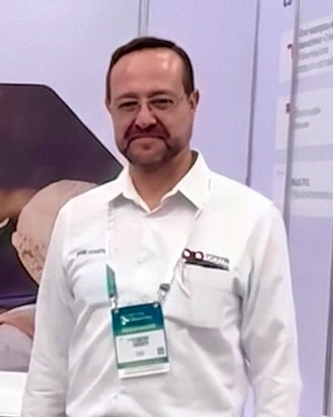

Más de 19 años dirigiendo operaciones comerciales y tecnológicas en América Latina. Trabajo en la intersección entre datos, automatización e inteligencia artificial aplicada: convertir lo que una empresa quiere lograr en una ruta que se puede ejecutar y sostener.

Casi dos décadas construyendo y dirigiendo operaciones comerciales y tecnológicas en América Latina. Empecé en venta de soluciones de analítica cuando la conversación todavía era sobre reportes, y desde entonces he acompañado el recorrido completo: inteligencia de negocio, grandes volúmenes de datos, modelos predictivos, automatización de procesos y, en los últimos años, inteligencia artificial aplicada a la operación.
Mi trabajo consiste en traducir lo que una empresa quiere lograr en una ruta técnica y comercial que se pueda ejecutar: qué se automatiza primero, qué se mide y cómo se sostiene en el tiempo. Dirijo equipos y acompaño proyectos en México, Colombia y Perú.
Me interesa la tecnología que resuelve un problema de negocio concreto, no la que se presenta bien en una diapositiva.
Seis frentes que suelen ir juntos: el dato sin proceso no cambia nada, y el proceso sin dato no se puede mejorar.
Definir qué información importa, cómo se mide y cómo se convierte en una decisión que la dirección puede tomar sin discutir el dato.
Inteligencia de negocio, analítica avanzada y modelos predictivos al servicio de la operación comercial, no del tablero.
Retirar de la operación diaria el trabajo repetitivo, midiendo el tiempo que se recupera y lo que deja de fallar.
Casos de uso acotados, con retorno claro, que se integran a lo que la empresa ya tiene en vez de reemplazarlo.
Operaciones de atención al cliente y contacto multicanal, con la tecnología como soporte y no como fin.
Estructura de ventas, criterios de priorización y acompañamiento de equipos para crecer sin deteriorar la operación.
El mismo orden en cada proyecto, sea de datos, de automatización o de inteligencia artificial.
Antes de proponer tecnología, ver cómo se trabaja hoy: dónde se pierde el tiempo, dónde se repite el trabajo y dónde se decide con información incompleta.
Elegir el primer caso por su efecto en el negocio y por su facilidad de adopción, no por lo llamativo de la tecnología.
Construir sobre lo que la empresa ya usa, con las personas que lo van a operar, para que el cambio quede instalado y no dependa de mí.
Dejar indicadores que cualquiera pueda revisar: qué mejoró, cuánto y qué sigue pendiente.
La tecnología solo cuenta cuando cambia lo que pasa el lunes en la operación.
Alejandro Mendoza Victorica
Dirección de la operación en América Latina: estrategia, crecimiento comercial y desarrollo de las capacidades analíticas y de automatización de la organización.
Construcción y liderazgo de la fuerza de ventas de soluciones de analítica, datos e inteligencia de negocio para empresas.
Licenciatura, Tecnológico de Monterrey.
Certificación internacional en Ciencia de Datos y Analítica de Negocio.
Si estás evaluando cómo ordenar tus datos, automatizar una parte de tu operación o llevar inteligencia artificial a un proceso concreto, escríbeme y lo vemos.